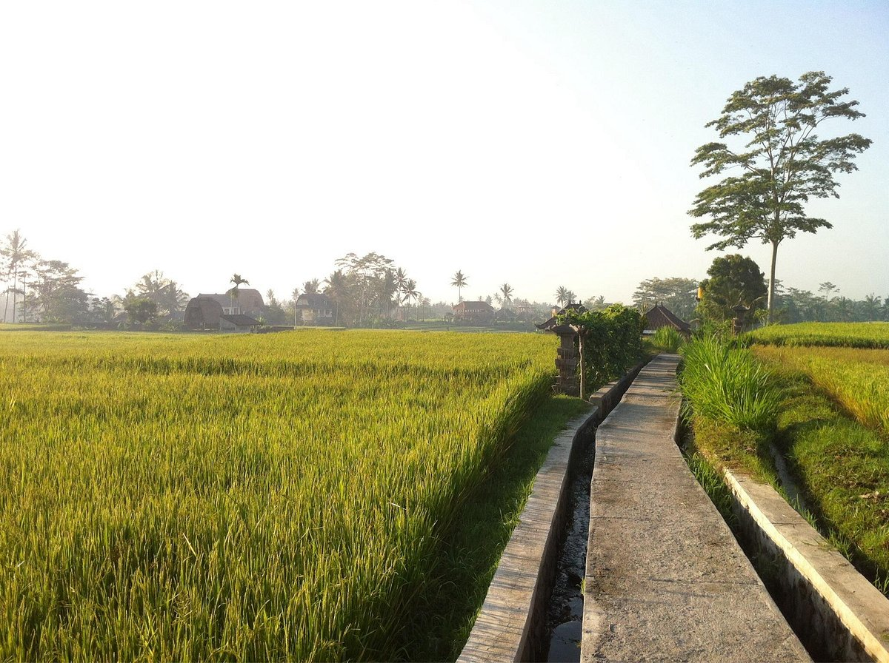
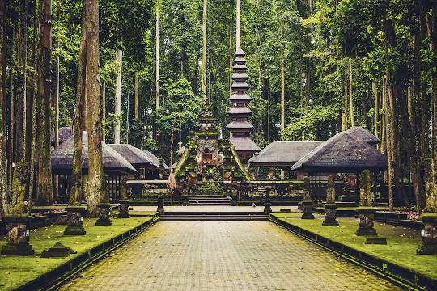
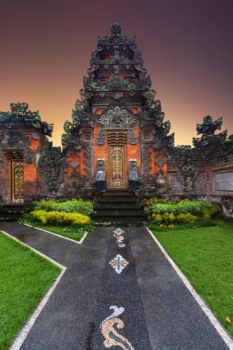

Campuhan Ridge Walk
Campuhan Ridge Walk wajib masuk dalam daftar rekomendasi destinasi wisata yang tak boleh dilewatkan di Bali.
Bukan tanpa alasan, destinasi ini memiliki sederet daya tarik yang tentu akan memberikan pengalaman serta sensasi baru dalam menikmati keindahan Pulau Dewata.
Daya tarik yang berikut ini sepertinya sudah cukup untuk menjadi alasan mengapa spot wisata alam ini sangat layak masuk dalam rencana perjalanan Sobat Pesona.
Mandala Suci Wenara Wana
Mandala Suci Wenara Wana atau disebut juga Monkey Forest Ubud
merupakan sebuah tempat cagar alam dan kompleks candi yang terletak di desa Padangtegal Ubud, Bali.
Di tempat ini mempunyai kurang lebih 1260 ekor monyet ekor panjang 
Pasar Seni Ubud
 Pasar Seni Ubud merupakan pasar tradisional yang menawarkan berbagai produk kesenian khas Bali.
Pasar Seni Ubud merupakan pasar tradisional yang menawarkan berbagai produk kesenian khas Bali.
Di kawasan ini, wisatawan bisa memperoleh ragam kerajinan hingga benda seni yang berkualitas.
Harga yang relatif murah menjadi nilai tambah tersendiri.
Pasar tradisional ini didominasi oleh wisatawan asing karena Ubud adalah salah satu destinasi favorit.
Pasar Seni tersebut menjadi daya tarik wisata yang selalu ramai dikunjungi.
The Blanco Renaissance Museum
Kawasan museum ini cukup menarik.
Karena, wisatawan akan disuguhkan dengan berbagai macam karya seni berupa lukisan-lukisan menarik.
Maha karya kelas atas yang pasti akan menghadirkan decak kagum.
Museum ini bernama Blanco Renaissance.